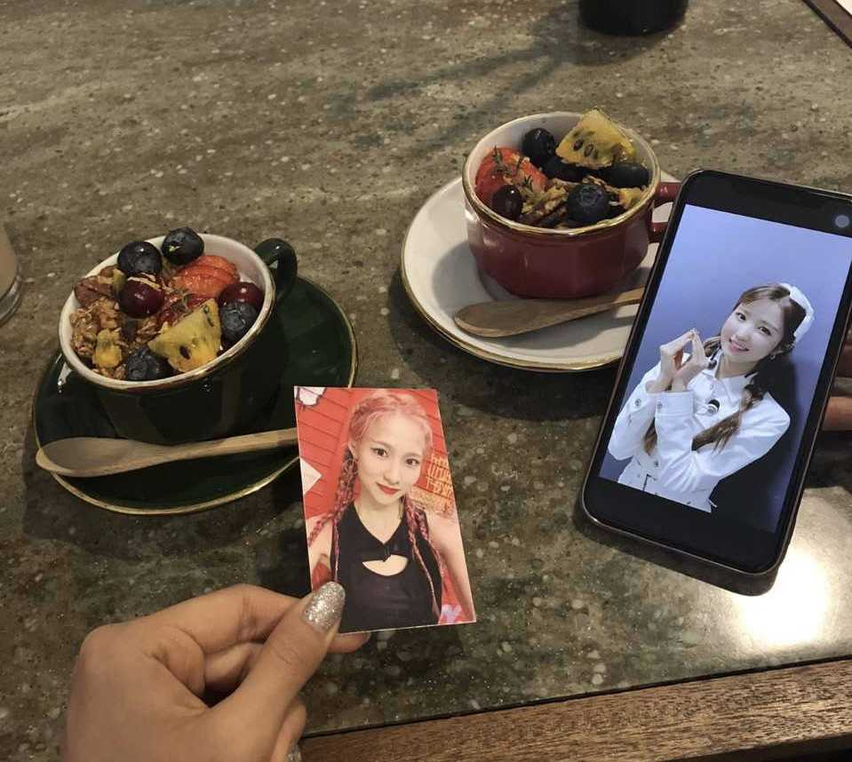
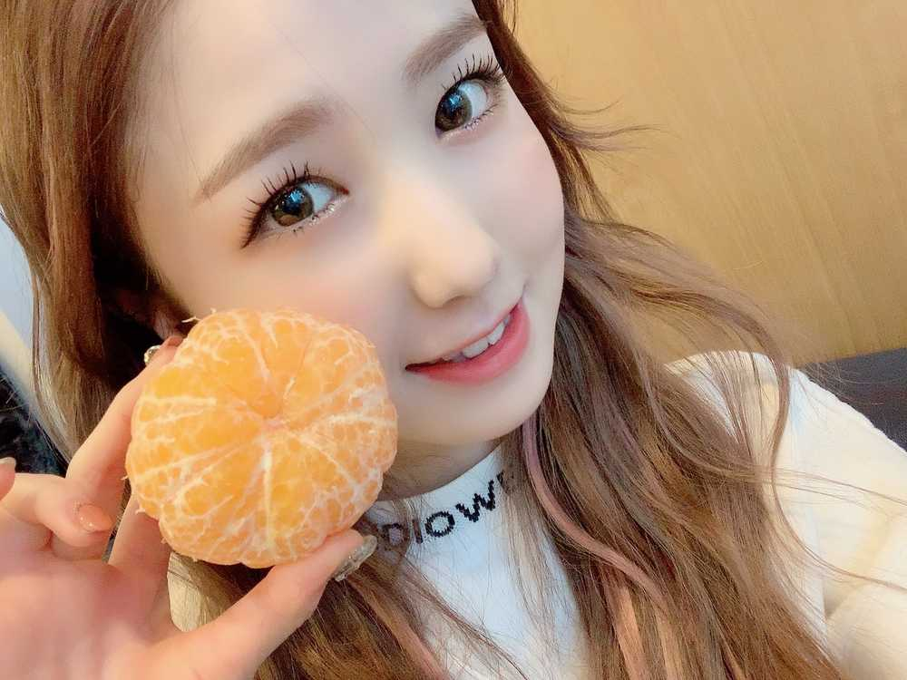

こんにちは🌞
ひいだよ🍓

レミとファンの方がよくやるやつやった😂
ひいも自分の写真
持ち歩こうかなㅋㅋㅋ
なぜか昨日は全然寝つきが良くなかった☹️
なんでだろう💭
이호もそんな日はありますか？？
そういえば昨日
「金曜日もがんばろう〜」って送ったけど
日本は春分の日だったからお仕事お休みの方も
多かったみたいですね🧐
わかんなかった〜😅
では質問タイム〜⏰
Q. 実はピアノができますか？
A. 言ったことないけど昔習ってました😊
幼稚園の年中さんのときから
小学校3年か4年のときまでだったかな🤔
でもひいは楽譜が読めなかったので
先生に教えてもらったのをそのまま覚えてた笑
よくそれで
長年やってられたよなって思った😂
Q. 好きな韓国のお菓子とかありますか？
A. ありますよ〜🥰
버터 와플🧇 （バターワッフル）
참ing 치즈크림（チーズサンドのお菓子🧀）
마가렛 （マーガレット）
ひいはグミとかポテチとかは
あんまり食べないから
基本的にクッキーとかが好きかな〜😉
アイスだったら
부라보（ブラボー）と
월드콘 （ワールドコーン）が断トツ好き😍
あとは찰 옥수수🌽っていうトウモロコシのも
とっても美味しいんだよ〜🍦
コンビニに全部あるよ🏪
韓国来たらチェックしてみて😇
ではまたっ！
오늘 날씨 좋네요!!
몰라서 패딩 입고 나왔어요ㅋㅋㅋㅋ
오늘의 TMI💡
뜨거운 수프를 먹었더니 데었어요😢
지금도 너무 아파요ㅠㅠ
차가운거 먹어야되나???😕
그러면 질문 타임!!!
진짜 많은 질문 감사해요ㅠ
깜짝 놀랐어요😳
Q. 귤 사진 누가 찍어준거야?
A. 제가 직접 찍었어요ㅎㅎㅎㅎ
타이머로!! ⏰
Q. 히 라디오에서
유학경험은 없지만 질문을 어떤걸 해야할까? ㅎㅎ
A. 유학경험이 없는 분도 상관없어요!!!
“요즘 가봤던 곳은 어디에요~??”
“짜장면 or 짜장밥 어느쪽이 취향이에요~?”
이런것도 괜찮아요!!!ㅋㅋㅋ
히 라디오에도 많은 메세지 기다리고 있을게요😚

前のだけど😅
ばいばーい👋🏻
ひいまる🥟